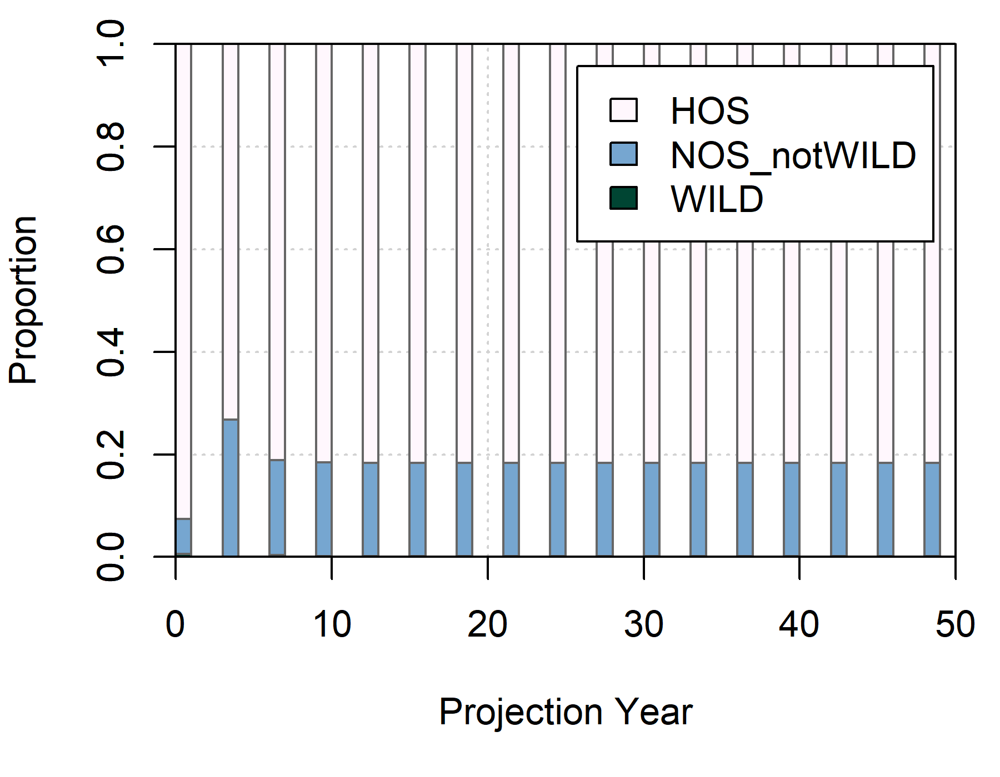

salmonMSE has the capability for multi-population modeling, which may represent distinct biological units that spawn and reproduce separately. There may be several use-cases for multi-population models. For example, one wants to evaluate:
The performance of management strategies for fisheries that catch multiple biological units. Smaller or less productive biological units may be choke points and there are objectives to ensure the sustainability of all population units. Will a specified harvest rate ensure the sustainability of a low productivity population unit?
The implications of hatchery production in large systems but there may be straying to unenhanced population units. Despite low stray rates, the hatchery influence can be high in small systems due to large hatchery production in an adjacent population. Will certain hatchery production levels compromise the natural characteristics of nearby systems?
The following code demonstrates the setup for a multi-population model and builds off the simple example to evaluate the influence of a nearby hatchery (population #1) on a small unenhanced system (population #2).
Just as in the simple example, we create an object of class
SOM comprising of sub-components that specify the
biological dynamics, as well as hatchery, habitat, and harvest. Here,
those sub-components will be lists corresponding to each population.
Below is the setup for each of the sub-components.
Bio object
We create a list containing Bio objects for each of two populations. Both populations have the same fecundity and marine survival, where the first population has a larger capacity (17,250 vs. 1,000) and 50% higher productivity (3 vs. 2 recruits/spawner) than the second population.
The projection will run three simulations but they are identical among each other.
library(salmonMSE)
ns <- 2 # Two population model
nsim <- 3 # Three simulations
SAR <- 0.01 # Identical SAR for both populations
Bio <- lapply(1:ns, function(s) {
new(
"Bio",
maxage = 3,
p_mature = c(0, 0, 1),
SRrel = "BH",
capacity = ifelse(s == 1, 17250, 1000), # Large population 1, small population 2
kappa = ifelse(s == 1, 3, 2), # Higher productivity in population 1, lower in population 2
Mjuv_NOS = c(0, -log(SAR), 0),
fec = c(0, 0, 5040),
p_female = 0.49,
s_enroute = 1
)
})
Bio[[1]]@kappa
#> [1] 3
Bio[[2]]@kappa
#> [1] 2Hatchery object
The larger first population has a hatchery program of 10,000 releases per year (quite small since the individual fecundity is 5,040), with no hatchery production for the second population.
For both populations, we want to model their fitness to the natural environment as hatchery fish spawn in the natural environment due to hatchery production in the first population and straying to the second population.
Hatchery <- lapply(1:ns, function(s) {
new(
"Hatchery",
n_yearling = ifelse(s == 1, 10000, 0),
n_subyearling = 0,
s_prespawn = 1,
s_egg_smolt = 0.92,
s_egg_subyearling = 1,
Mjuv_HOS = Bio[[s]]@Mjuv_NOS,
gamma = 0.8,
m = 1, # Mark rate of hatchery releases
pmax_esc = 1, # Maximum proportion of escapement (after en route mortality) that could be used as broodtake
pmax_NOB = 0.7,
ptarget_NOB = 0.51,
phatchery = ifelse(s == 1, 0.8, 0),
premove_HOS = 0,
theta = c(100, 80),
rel_loss = c(0.5, 0.4, 0.1),
fec_brood = c(0, 0, 5040),
fitness_type = c("Ford", "none"),
zbar_start = if (s == 1) c(93.1, 92) else c(100, 92),
fitness_variance = 100,
phenotype_variance = 10,
heritability = 0.5,
fitness_floor = 0.5
)
})Habitat object
No freshwater specific habitat-based survival is modeled here. We
specified density-dependent egg-smolt survival in the Bio
objects.
Habitat <- lapply(1:ns, function(s) {
new(
"Habitat",
use_habitat = FALSE
)
})Harvest object
Here, a terminal harvest rate of 0.203 is specified for both populations.
It is assumed that the preterminal fishery is a mixed-population fishery. Therefore, the harvest rate of the first population applies for all populations.
It is assumed that the terminal fishery is a single-population fishery, and thus, it is possible to control of individual populations.
Currently, salmonMSE assumes equal catchability of all populations by the fishery:
Historical object
The operating model is initialized with a return of 1000 natural-origin and hatchery-origin fish each in the first population, and a return of 100 natural-origin fish (no hatchery return) in the second population.
Stray matrix
Once these objects are set up, they can be combined to create the operating model. The projection will run for 50 years:
SOM <- new(
"SOM",
Bio, Habitat, Hatchery, Harvest, Historical,
nsim = nsim,
nyears = 2,
proyears = 50
)An additional slot in the SOM object specifies the stray
rate of hatchery-origin escapement among populations. Columns in the
square matrix denote origin (donor) population and the rows denote
recipient populations. The diagonal in the matrix is the retention rate
(hatchery-origin escapement that do not stray).
The straying matrix is applied to the escapement (after the terminal fishery operates).
Here, 25 percent of the hatchery fish escapement from the first population will stray to the second population:
#> [,1] [,2]
#> [1,] 0.75 0.25
#> [2,] 0.00 1.00
salmonMSE:::plot_stray(SOM@stray)Stray rates in the multi-population model.
Results
Once the operating model is set up, we can run the projection and generate the Markdown report:
We can see that the second population rapidly transitions from a natural population to a hatchery-dominated system due to strays from the first population. The population equilibriates after 4 generations:
plot_spawners(out, s = 2, prop = FALSE)